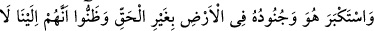
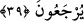
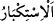
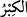
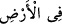
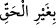
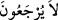
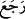

ve muhkem bir bina olmuştu ki, hiç kimse o zamana kadar böyle bir köşk yapmamış ve
dünyanın hiçbir yerinde onun gibisini kimse görmemiş ve işitmemişti.
O öyle yüksek bir yapıydı ki akıl,
Fikir kemendini onun damının bir köşesine atmamıştı.
Behlül, Halife Hârun Reşid’in inşâ ettirdiği büyük köşkün duvarlarından birine şöyle
yazdı: Ey Hârun, binayı yükselttin, dini alçalttın. Bu, senin malından ise israf ettin;
Allah israf edenleri sevmez. Başkasının malından ise, zulmettin; Allah zâlimleri
sevmez.
Zâdü’l-mesîr’de denir ki: Bina tamamlandığında mel’un Firavun tepesine çıktı.
Feleğe yakın olmayı hayal ediyordu. Sarayın tepesinden gökyüzüne bakınca,
yeryüzünden nasıl görüyorsa o şekilde gördü. Canı sıkıldı. Okçusuna söyledi, o da
gökyüzüne bir ok attı. O ok kana bulanmış bir hâlde geri geldi. Firavun, “Mûsâ’nın
rabbini öldürdüm” dedi. Hak sübhânehû ve teâlâ Cebrail’i gönderdi. O, köşke
kanadıyla vurdu ve üç parçaya ayırdı. Bir parçası Firavun’un ordugâhına düştü; on
binlerce Kıptî öldü. Diğer parçası denize düştü. Bir diğer parçası da batı tarafına düştü;
ustalardan ve amelelerden canlı kimse kalmadı.
Fethu’r-Rahmân’da der ki: Firavun dini üzere olup da orada çalışanlardan hiç kimse
kalmadı, hepsi helâk oldu.
Bu duruma rağmen Firavun gafletten uyanmadı, gururu daha da arttı.
39. O ve askerleri, yeryüzünde haksız yere büyüklük tasladılar ve gerçekten
bize döndürülmeyeceklerini sandılar.
“O ve askerleri, yeryüzünde” îman etmeğe karşı “haksız yere büyüklük tasladılar,”
hakka boyun eğmediler.
“
(istikbâr)”, bâtıl olarak büyüklük göstermektir. “Tekebbür” ise böyle olmayıp
daha umumidir. “
(kibir)”, insanın, kendisini başkasından büyük zannetmesidir. “
(arzda)” ifâdesiyle, Mısır ve yöresi kasdedilmektedir. “
”, “istihkak
olmaksızın, hak etmeksizin” demektir.
“Ve gerçekten bize döndürülmeyeceklerini” ve öldükten sonra cezâ için tekrar
diriltilmeyeceklerini “sandılar.”
“
(döndürülmeyecekler)”, “
(döndü)” fiilinden türetilmiş olup “ (geri
gönderdi)” anlamına gelir.